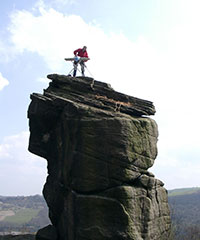

EXTREME IRONING
Extreme ironing (also called EI) is an extreme sport in which people take ironing boards to remote locations and iron items of clothing. According to the Extreme Ironing Bureau, extreme ironing is "the latest danger sport that combines the thrills of an extreme outdoor activity with the satisfaction of a well-pressed shirt."
Part of the attraction and interest the media has shown towards extreme ironing seems to center on the issue of whether it is really a sport or not. It is widely considered to be tongue-in-cheek.Some locations where such performances have taken place include a mountainside of a difficult climb; a forest; in a canoe; while skiing or snowboarding; on top of large bronze statues; in the middle of a street; underwater; in the middle of the M1 motorway; in a keirin cycle race; while parachuting;and under the ice sheet of a frozen lake.The performances have been conducted solo or by groups.

History
Extreme ironing was invented in 1997 in Leicester, England, by resident Phil Shaw in his back garden. Shaw came home from what he recalls as a hard day in a Leicester knitwear factory. Shaw had a number of chores to do, including ironing his shirts. Preferring the idea of an evening out rock climbing, he decided to combine the two activities into a new extreme sport. In June 1999, Shaw, who uses the nickname "Steam", embarked on an international tour to promote the activity. The stops included the United States, Fiji, New Zealand, Australia and South Africa. An encounter with German tourists in New Zealand led to the formation of a group called "Extreme Ironing International", and the German Extreme Ironing Section or GEIS.This has yet to popularize in North America.
As extreme ironing has branched off, the conditions can gain in extreme activity. For example, a branch of ironing has been developed that includes both bungee jumping and well-pressed clothing. Bungee ironing is what some would call the ultimate in the thrill of extreme ironing.The sport gained international attention in 2003 after a documentary entitled Extreme Ironing: Pressing for Victory, was produced for Britain's Channel 4 by Wag TV. The program followed the British team's efforts and eventual Bronze and Gold placings in the 1st Extreme Ironing World Championships in Germany. A side-story looked at the rivalry between the EIB (Extreme Ironing Bureau) and a breakaway group called Urban Housework who were trying to establish their own extreme sport based around vacuum-cleaning. The film later aired on the National Geographic Channel.